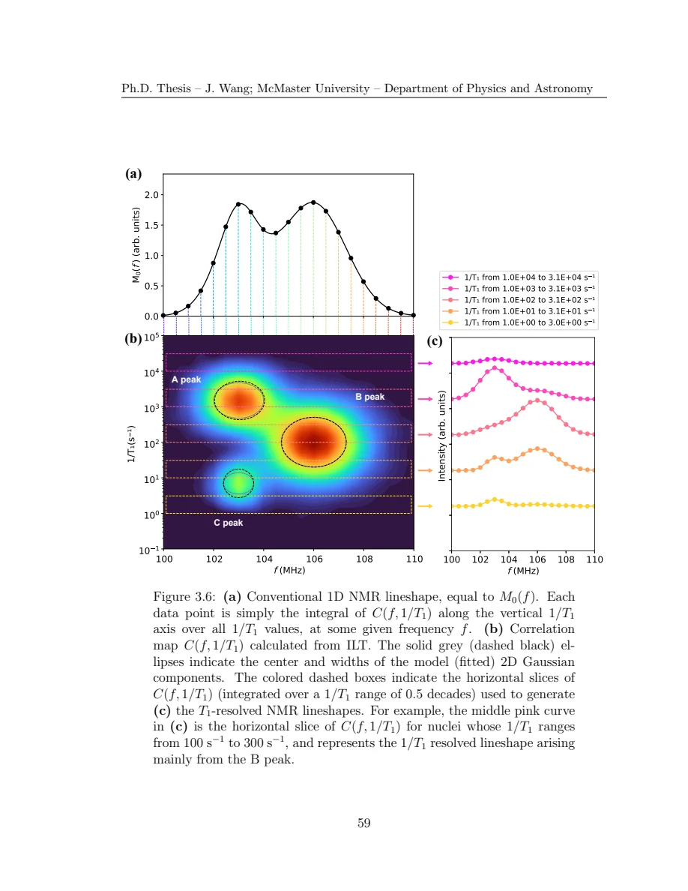

Wang · supplied source 2024 · chapter unit
5 · Keep frequency and relaxation together
A joint distribution retains correlations; its marginals and selected slices answer different questions.
The question: What can a two-dimensional map reveal that two averages hide?
Before you start: the terms you need
- Quantum spin liquid candidate: a material tested against a quantum-disordered model; a null ordering signal is insufficient identification.
- K: local resonance shift, sensitive to a coupling-weighted static susceptibility.
- 1/T₁: recovery rate that samples fluctuations in the probe frequency window.
- ILT: constrained, regularized inference of a relaxation-rate distribution from recovery data.
- log-rate density: probability is the area in d log₁₀(1/T₁), not peak height.
See → explain → check
Follow the idea in 2 pictures.
Picture 1 / 2
A slice misses part of the map
Look for: A fixed frequency intersects only part of each environment.
Swipe across the picture to read every label, or enlarge it below.
- Frequency / shift
- Log rate
- Selected slice
Arbitrary-coordinate teaching ellipses, not a measured contour map.
Joint information can reveal correlations that marginals hide.
Check the original: Original PDF p. 72 · Original PDF p. 73
Picture 2 / 2
Project with the correct measure
Look for: Integrate all log-rate weights to recover the line.
Swipe across the picture to read every label, or enlarge it below.
- Joint C(f,R)
- Integrate chosen log-R band
- Full or partial line
A mathematical projection, not a new measured observable.
A partial rate interval gives a different, resolved line shape.
Check the original: Original PDF p. 70 · Original PDF p. 73
Explain it back.
Try answering aloud before opening the explanation.
Why retain amplitude between frequencies?
The relative equilibrium signals encode the line shape. Removing them by separate normalization destroys that population weighting.
Does one P(R) represent the whole broad line?
No. It represents the excited frequency band unless full-line coverage and consistent weighting are established.
Go deeper Follow the full argument
Build the map with intensity intact
At each frequency, acquire a recovery and infer the rate distribution for the nuclei selected there. Retain the equilibrium amplitude associated with that frequency, then combine the slices into C(f,R). Integrating in log rate gives the frequency line shape; integrating only a restricted rate interval gives a rate-resolved partial line. A map thus keeps information about static local fields and dynamics together. A single-frequency distribution describes a slice, not the full sample, and individually unit-normalizing every slice would remove the line-intensity information needed for these projections.
Why the synthetic three-component map is useful
The source constructs three overlapping two-dimensional Gaussian components. Two share nearly the same frequency yet have different rates; the third sits at another frequency. The ordinary line merges the frequency-overlapping pair, while one selected recovery misses parts of the third population. The joint map identifies all three under the specified synthetic conditions. The illustration here uses conceptual ellipses and projection arrows without copying fitted experimental coordinates or fabricating pixels. Inspect the original figures to distinguish the known synthetic model from the later material maps and their different uncertainties.
Original PDF p. 69 · Original PDF p. 70 · Original PDF p. 71 · Original PDF p. 72 · Original PDF p. 73
The experiment costs more than the graphic suggests
A joint map needs many recoveries over frequencies, each with sufficient SNR for stable inference. The thesis describes a large acquisition-time cost compared with conventional one-dimensional work. Drift, different sensitivity or visibility across the line, regularization and finite frequency coverage can affect the combined result. The advantage is not that two dimensions automatically guarantee truth. It is that local frequency and rate can separate environments whose one-dimensional projections overlap. The Zn-barlowite fluorine study uses this approach to compare its narrow main signal with a broad, faster component.
Original PDF p. 71 · Original PDF p. 106 · Original PDF p. 108
Translate the mathematics Essential equations and their meaning
M₀(f) = ∫ C(f,R) d log₁₀R
Symbols: f: resonance frequency; R: relaxation rate; C: intensity-preserving joint density.
The full integral gives the line; a restricted integral gives a rate-resolved partial line. Use the same visibility and normalization conventions.
Read the evidence Guided original source pages

Original PDF p. 73
What the evidence supports—and where it stops
- Synthetic maps and measured material maps have different evidence status.
Source version, reading coverage and preservation
All substantive text in Chapters 1–7, the reprinted research article and numerical appendices read; original working kernels, equations and key result figures visually checked.
Reviewed body pages: 15, 16, 17, 18, 19, 20, 21, 22, 23, 24, 25, 26, 27, 28, 29, 30, 31, 32, 33, 34, 35, 36, 37, 38, 39, 40, 41, 42, 43, 44, 45, 46, 47, 48, 49, 50, 51, 52, 53, 54, 55, 56, 57, 58, 59, 60, 61, 62, 63, 64, 65, 66, 67, 68, 69, 70, 71, 72, 73, 74, 75, 76, 77, 78, 79, 80, 81, 82, 84, 85, 86, 87, 88, 89, 90, 91, 92, 93, 94, 95, 96, 97, 98, 99, 100, 101, 102, 103, 104, 105, 106, 107, 108, 109, 110, 111, 112, 113, 114, 115, 116, 117, 118, 119, 120, 121, 122, 123. Personal acknowledgements omitted from teaching content. Bibliographies and external supplements not independently re-read; only material actually present in the thesis is covered.
Source SHA-256: 80ad8aaad2ce3f48320bef046c30907939f8018990292aa5ebb7e5269d912da2. Original file bytes preserved locally; public scientific page images are rendered from that source.
Thesis - Wang - 2024 - Disordered spin liquids - NMR and inverse Laplace analysis.pdf